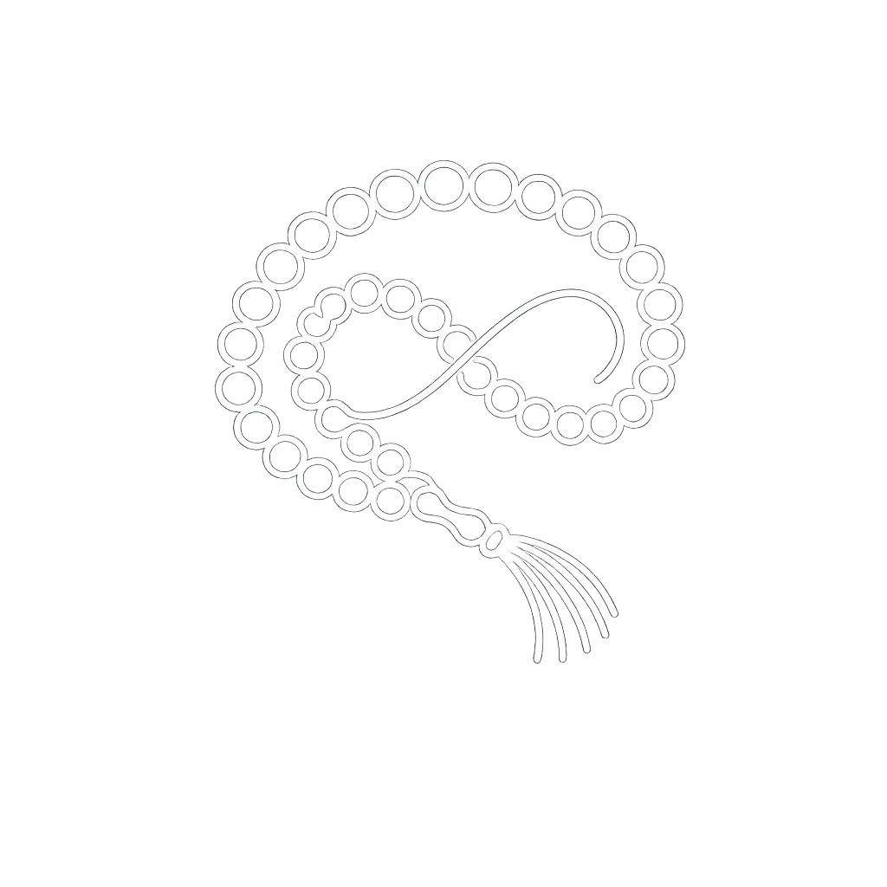

هنا يمكنك العثور على أفضل التسابيح العالمية وبدء رحلتك الروحية.
هناك تسابيح عالمية متعددة يمكنك اكتشافها وبدء رحلتك في تصدرها
يمكنك استخدامه بدون أي تكلفة، فقط قم بتحميله وابدأ رحلتك في التسبيح.
يمكنك استخدامه على الهواتف الذكية، الأجهزة اللوحية، وأجهزة الكمبيوتر.
لا يقوم بجمع أي بيانات شخصية، مما يضمن تجربة آمنة ومريحة.